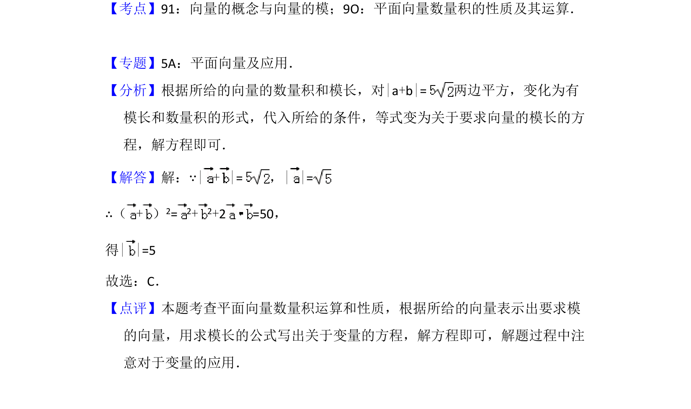

考点：向量的模 平面向量数量积 向量运算
已知向量坐标、数量积及向量和的模，求另一向量的模。

📄 原 PDF 第 4 页：
素材/真题/吉林/2008-2024·（吉林）数学高考真题/2009年高考数学试卷（理）（全国卷Ⅱ）（解析卷）.pdf
6．（5分）已知向量=（2，1），=10，| + |=，则| |=（ ） A．B．C．5 D．25
【考点】91：向量的概念与向量的模；9O：平面向量数量积的性质及其运算．菁优网版 权所有 【专题】5A：平面向量及应用． 【分析】根据所给的向量的数量积和模长，对|a+b|=两边平方，变化为有 模长和数量积的形式，代入所给的条件，等式变为关于要求向量的模长的方 程，解方程即可． 【解答】解：∵| + |=，| |= ∴（+） 2= 2+ 2+2 =50， 得| |=5 故选：C． 【点评】本题考查平面向量数量积运算和性质，根据所给的向量表示出要求模 的向量，用求模长的公式写出关于变量的方程，解方程即可，解题过程中注 意对于变量的应用．